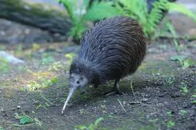

Chirrrp…Chirrrp do you hear that? Those are the sounds of birds in the wide ecosystem of New Zealand. A small bird with a long beak pops out of nowhere. Oh what do you mean what’s on my hand it’s a bird…is it why does it look like this…no it must be a cat maybe…Oh wait I remember now from all the unique and beautiful birds in New Zealand this little guy is the Kiwi New Zealand’s national bird. Now how did this seemingly random bird catch the hearts of the people of New Zealand?
